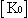
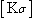
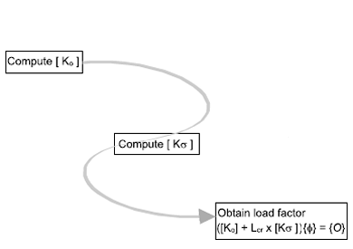

The buckling analysis incorporates the stiffness due to the part geometry, material properties, and the applied loads and constraints.
 represents the stiffness of the initial configuration, and is computed from the initial part geometry and the linear material stiffness.
 represents the stress stiffness due to the applied loads and constraints.
represents the critical load factor multiplier (eigenvalue).
represents the buckled mode shape (eigenvector).
